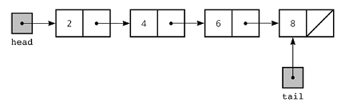
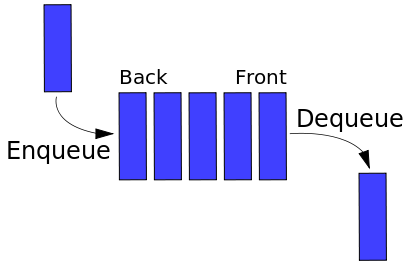
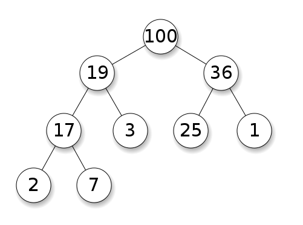

Linked Lists
Linked lists are one of the simple data structures, but are very important. They are used in many different ways and can be combined into other structures to form more complex data structures that can handle different operations. This section will go into detail on the implementation for various types of linked lists, and how they are commonly used.
Queues
Queues are used to store abstract types of data or a collection in a particular order. They follow a strict first-in-first-out (FIFO) rule-set and are used in many important operations where scheduling and order is needed. This section will go into detail on the implementation for a queue.
Trees
Trees are a data structure that can be used in many situations. They contain a list a nodes that points to their children nodes, they can be as simple as a binary tree or complex like a b-tree. This section will go into detail on the different types of trees and their implementation. It will also cover some aspects of the levels of efficiency of each type of tree.

Heaps
Heaps are a special subset of the tree data structure. They follow specific rules on how they are ordered and operate. This section will cover their implementation and uses.
Hash Tables
A hash table is a form of associative array that matches keys to values. These are to store unique information, such as abstract data type used for databases, and are able to search and retrieve the value from a given key-pair quickly and efficiently.